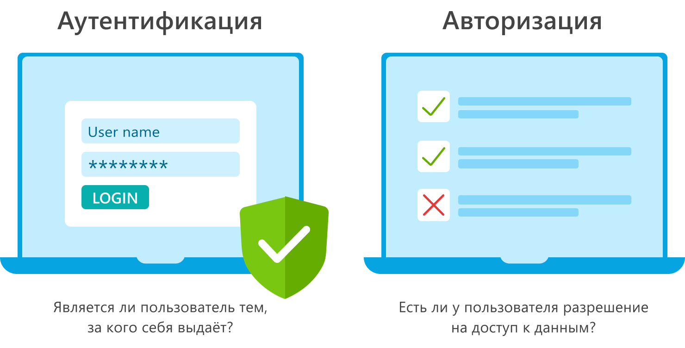

Клиент-серверная архитектура
Клиент-серверная архитектура – это система распределения, в которой одни устройства обращаются к другим для получения необходимой информации или выполнения определенных задач. Первые из них называются клиентами, вторые – серверами.Особенности такой модели заключаются в том, что пользователь отправляет определенный запрос на сервер, где тот системно обрабатывается и конечный результат отсылается клиенту. В возможности сервера входит одновременное обслуживание сразу нескольких клиентов.
Виды
Толстый клиент (или heavy client) — это клиентское приложение, которое содержит значительное количество бизнес-логики и обработки данных. Он выполняет много задач на стороне клиента, что снижает нагрузку на сервер.
Тонкий клиент (или light client) — это клиентское приложение, которое выполняет минимальное количество бизнес-логики и обработки данных. Основная обработка и хранение данных происходят на сервере.
URL
URL обозначает Uniform Resource Locator. URL это лишь адрес, который выдан уникальному ресурсу в интернете. Максимальная длинна URL = рекомендуется не более 2000
Что такое HTTP
HTTP (Hypertext Transfer Protocol) — это протокол передачи данных,
который используется для передачи информации в интернете. Он является
основой для обмена данными между веб-браузерами и веб-серверами.
документам.
Структура(GET /path HTTP/1.0): В первой строчке
указаны метод запроса — GET, путь к ресурсу — /path и версия протокола
— HTTP/1.0. Далее идёт блок заголовков. Заголовки — это пары ключ:
значение, каждая из которых записывается с новой строки и разделяется
двоеточием. Они передают дополнительные данные и настройки от клиента
к серверу и обратно.
Версия 1.1 и 2 использует протокол TCP а
версия 3 использует QUIC
Ответ http:Версия, Статусный код, Статусное сообщени HTTP/1.1 200 OK
Что такое HTTPs
HTTPs — это расширение для протокола HTTP, которое делает его безопасным. Дело в том, что данные передаются по HTTP в открытом виде. Это создаёт риск раскрыть конфиденциальную информацию, если кто-то перехватит трафик. HTTPs решает эту проблему, добавляя в изначальный протокол возможность шифрования данных. Аббревиатура HTTPs расшифровывается как HyperText Transfer Protocol Secure — безопасный протокол передачи гипертекста. Безопасность достигается за счёт объединения протокола HTTP с криптографическим протоколом TLS.Протокол HTTPs предусматривает, что при установке соединения клиент и сервер договариваются об использовании временного ключа, при помощи которого будут зашифровывать и расшифровывать сообщения. Этот ключ называется «сеансовый», потому что действует только в течение текущего сеанса на сайте. Для каждого нового сеанса генерируется новый ключ.
SSL сертификат
SSL-сертификат – это цифровой сертификат, удостоверяющий подлинность веб-сайта и позволяющий использовать зашифрованное соединение.Они нужны сайтам, чтобы подтвердить безопасность передачи данных от пользователей на сервер, а также чтобы указать права собственности и не допустить его подделки злоумышленниками.Получить их можно в центрах сертификации
Список кодов состояния HTTP
- 1xx: Informational (информационные)
- 2xx: Success (успешно):
- 3xx: Redirection (перенаправление)
- 4xx: Client Error (ошибка клиента)
- 5xx: Server Error (ошибка сервера)
Аутентификация и Авторизация
Аутентификация — предоставление доказательств, что вы на самом деле есть тот, кем идентифицировались. Аутентификация по одноразовым паролям обычно применяется дополнительно к аутентификации по паролям для реализации two-factor authentication (2FA). Авторизация — проверка, что вам разрешен доступ к запрашиваемому ресурсу.Виды - через логин и пароль, через сервисы(Google, VK и тд)
Сессия на сайте
В веб-сфере под сессией принято понимать определенный промежуток времени, который начинается в момент перехода на сайт и заканчивается с закрытием его вкладок.
Токен
Cashe and cookie
Кэш – это файлы,(временная память) создаваемые веб-сайтами, которые вы
посещаете, которые содержат информацию которая с большей вероятностью
будет запрошена. Это делает работу в интернете проще. В кеше
сохраняется определенная информация с веб-страниц (например,
изображения), чтобы в следующий раз они открывались быстрее
Ку́ки - небольшой набор данных, отправляемый веб-сервером и хранимый на
компьютере пользователя без изменений и какой-либо обработки.
Веб-клиент (обычно веб-браузер) всякий раз при обращении к
соответствующему сайту пересылает эти данные веб-серверу в составе
HTTP-запроса(аутентификации пользователя; хранения персональных
предпочтений и настроек пользователя; отслеживания состояния сеанса
доступа пользователя; хранения сведений статистики о пользователе.)
Виды куков
- Сессионные куки (Session Cookies):Эти куки хранятся только в течение текущего сеанса браузера. Они удаляются, как только пользователь закрывает браузер или вкладку.
- Перманентные куки (Persistent Cookies):Эти куки сохраняются на устройстве пользователя между сеансами браузера. Они имеют установленный срок действия (expiry date), по истечении которого они автоматически удаляются.
- Первичные куки (First-Party Cookies):Эти куки устанавливаются и управляются сайтом, который пользователь посетил напрямую. Они доступны только для этого сайта и используются для хранения данных, специфичных для текущего сайта.
Веб-приложение
Web-Service
Веб-сервис - это набор протоколов и стандартов которые используются для обмена данными между различными системами и приложениями используя стандартные форматы(XML, JSON). Напротив, интерфейс прикладного программирования (API) - это программный интерфейс, через который два приложения могут взаимодействовать без участия пользователя.
Веб-сервис используется для REST, SOAP и XML-RPC для связи, а API
используется для любого стиля связи.
Веб-сервис поддерживает только протокол HTTP, тогда как API
поддерживает протокол HTTP/HTTPS.
Веб-сервис поддерживает XML, а API поддерживает XML и JSON.
Все веб-сервисы являются API, но не все API являются веб-сервисами.
Отличие веб-сервиса и веб приложения
WA - Информация понятная человеку, есть графический интерфейс
WS - Используется программами, нету графического интерфейса
REST
REST — архитектурный стиль, с помощью которого различные компоненты веб-приложений могут общаться между собой.REST API использует стандартные HTTP-методы: post, get, put, patch, delete
Плюсы
- Простота и Легкость:REST использует стандартные HTTP-методы (GET, POST, PUT, DELETE), что делает его проще и легче в реализации.
- Гибкость и Универсальность:REST может работать с различными форматами данных, что позволяет использовать его в самых разных приложениях.
- Совместимость с браузерами и клиентами:REST легко интегрируется с веб-браузерами и другими клиентами, поддерживающими HTTP.
- Меньшая нагрузка на сервер:Из-за использования простых HTTP-методов и форматов данных, REST может создавать меньшую нагрузку на сервер по сравнению с SOAP.
Минусы
- Ограниченная стандартная спецификация:REST не имеет строгих стандартов и спецификаций,
- Отсутствие встроенных механизмов безопасности:REST не имеет встроенных механизмов для обеспечения безопасности, что требует дополнительных мер для реализации таких функций, как аутентификация и авторизация.
SOAP
SOAP — это формат обмена сообщениями.При этом сообщения должны быть написаны на языке XML в соответствии со строгими стандартами, иначе сервер вернет ошибку.
Плюсы
- Строгая спецификация и стандарты:SOAP имеет четкие стандарты и спецификации
- Встроенные механизмы безопасности:SOAP предоставляет встроенные средства для обеспечения безопасности сообщений, такие как WS-Security.
Минусы
- Сложность и объемность:SOAP может быть сложным в реализации и требует большего объема данных для обработки, что может повлиять на производительность.
- Требовательность к ресурсам:SOAP-сообщения обычно более объемные из-за использования XML, что может увеличить нагрузку на сервер и сеть.
- Меньшая гибкость:SOAP требует использования XML для сообщения, что может быть менее удобным и более ресурсоемким по сравнению с JSON.
- Не всегда совместим с веб-браузерами:SOAP-сервисы часто требуют сложных библиотек и инструментов для взаимодействия, что может усложнить интеграцию с веб-браузерами и легкими клиентами.
JSON
текстовый формат обмена данными, основанный на JavaScript.Может передавать массивы, числа, строки, буллеан значения, обьекты и null
Что такое модель OSI?
OSI - семиуровневая модель, описывающая взаимодействие сетевых устройств между собой. Уровни (слои) включают в себя физический, канальный, сетевой, транспортный, сеансовый, представительный и прикладной. Каждый слой имеет свои протоколы и стандарты, определяющие принципы передачи данных и взаимодействия систем.

ФИЗИЧЕСКИЙ УРОВЕНЬ. Задачи: определяет характеристики физической передачи данных через среду, такие как напряжение электрического тока, частота колебаний и среды (медные кабели, волоконно-оптические линии, беспроводные каналы и т. д.). Примеры использования: кабели, концентраторы.
КАНАЛЬНЫЙ УРОВЕНЬ. Задачи: обеспечивает передачу данных между устройствами в локальной сети и управляет доступом к среде передачи. Примеры устройств: коммутаторы, сетевые адаптеры.
СЕТЕВОЙ УРОВЕНЬ. Задачи: осуществляет обеспечение и управление адресацией и маршрутизацией. Примеры устройств: маршрутизаторы.
ТРАНСПОРТНЫЙ УРОВЕНЬ. Задачи: осуществляет контроль передачи данных между устройствами, обеспечивает надежность и управляет потоком данных. Примеры использования: TCP и UDP.
СЕАНСОВЫЙ УРОВЕНЬ. Задачи: управляет установлением, управлением и завершением сеансов связи между устройствами. Пример использования: некоторое ПО для управления сессиями.
ПРЕДСТАВИТЕЛЬСКИЙ УРОВЕНЬ. Задачи: отвечает за преобразование информации в форму, понимаемую получателем, и обеспечивает шифрование и сжатие. Пример использования: ПО для (де)компрессии и (де)кодирования данных.
ПРИКЛАДНОЙ УРОВЕНЬ. Задачи: предоставляет приложениям доступ к сети и ресурсам, обеспечивает коммуникацию между этими приложениями. Примеры ПО: браузеры, почтовые клиенты, файловые серверы. Эти слои OSI помогают разделить функциональность сетевых систем на более мелкие компоненты, что облегчает создание, поддержку и совместимость различных сетевых устройств и приложений.
Модель TCP/IP
TCP/IP — сетевая модель передачи данных, представленных в цифровом виде. Модель описывает способ передачи данных от источника информации к получателю. В модели предполагается прохождение информации через четыре уровня, каждый из которых описывается правилом (протоколом передачи).Они нужны, чтобы устанавливать надёжный канал связи между устройствами и передавать по нему данные
TCP и UDP
Протокол TCP — это технология передачи данных, которая является одним из главных транспортных протоколов. Его также называют протоколом сквозной связи. Эта технология была изобретена еще в далеком 1974 году. С тех пор она несколько усовершенствовалась и стала одним из элементов фундамента современного Интернета. Протокол передает данные с пользовательского устройства на веб-сервера. Он отличается высоким уровнем надежности. Это достигается путем обязательной установки стабильного соединения. Он также поддерживает его на заданном уровне в течение всего процесса передачи пакетов.
Протокол UDP — это более быстрая, но менее надежная технология обмена данными. Она применяется там, где важна непрерывность потока. Протокол был разработан не намного позже TCP — в 1980 году. С его помощью возможен обмен пакетами по IP-сети без необходимости предварительной установки стабильных каналов или путей передачи данных. Он работает используя дейтаграммы — блоки информации, передаваемые напрямую, без создания выделенного виртуального канала.
Разница между UDP и TCP заключается в скорости и надежности передачи данных
QUIC
QUIC (сокр. от англ. Quick UDP Internet Connections; произносится quick) — экспериментальный интернет-протокол, разработанный Google в конце 2012 года. QUIC основан на UDP и был разработан для решения проблем TCP, который является доминирующим транспортным протоколом, используемым в Интернете.QUIC предоставляет ряд ключевых функций, которые повышают производительность и безопасность, среди них – мультипоточность, приоритезация, управление перегрузками и сквозное шифрование.
Автоматизированное тестирование
Автоматизированное тестирование - это метод тестирования программного обеспечения, который выполняется с использованием специальных программных средств
Какие тестовые случаи стоит автоматизировать
- Тестовые сценарии, которые регулярно повторяются.
- Тестовые сценарии, которые очень сложны и утомительны для выполнения вручную.
- Smoke тест
- Регрессионное тестирвоание
- тестирования производительности или при нагрузочном тестировании
Плюсы автоматизации
- экономия времени
- Повторяемость – код автотестов можно использовать многократно, особенно при внедрении новой функциональности.
- агрузка на приложение – возможно моделирование большой нагрузки, приближенной к реальной.
Минусы автоматизации
- дороговизна
- UI-тестирование. Автотестирование не может в полной мере заменить ручное тестирование и покрыть требования к пользовательскому интерфейсу
- необходим высококвалифицированный персонал с сильной технической базой
- Нужны специальные интсрументальные средства
- В случае серьезных изменений в приложении многие автотесты становятся бесполезны